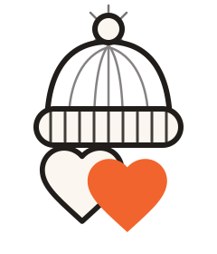

Logo — identité déjà tranchée
Bonnet tricoté illustré + deux cœurs superposés (contour blanc, plein orange), wordmark serif, tagline sans-serif capitales. Ce système est acté (Notion 03) : le travail ici est de le formaliser en assets vectoriels propres et de fixer ses règles d'usage.
Symbole

Lockup vertical (usage principal)
Lockup horizontal (en-tête, footer)
Favicon / effet tampon
Variante "effet tampon" retenue pour les formats compacts (favicon, avatar réseaux sociaux) — l'un des 5 styles explorés sur la planche de marque, réutilisé ici pour un usage fonctionnel concret.
Usage sur fonds
Sur fond sombre (institutionnel, encre), utiliser la variante « effet tampon » (badge circulaire) plutôt que le symbole ligne fine, qui perd en lisibilité sans fond de contraste.
Règles d'usage
- Espace de protection minimum : la hauteur du pompon tout autour du symbole.
- Taille minimale lisible : 32px de large pour le symbole seul, 120px pour le lockup horizontal.
- Ne jamais recolorer les cœurs autrement qu'en contour clair + plein Orange Pop (brut, décoratif).
- Ne jamais étirer, incliner ou ajouter d'ombre portée au symbole.
- Le wordmark est toujours en Fraunces — jamais en Inter, jamais en capitales extrudées.